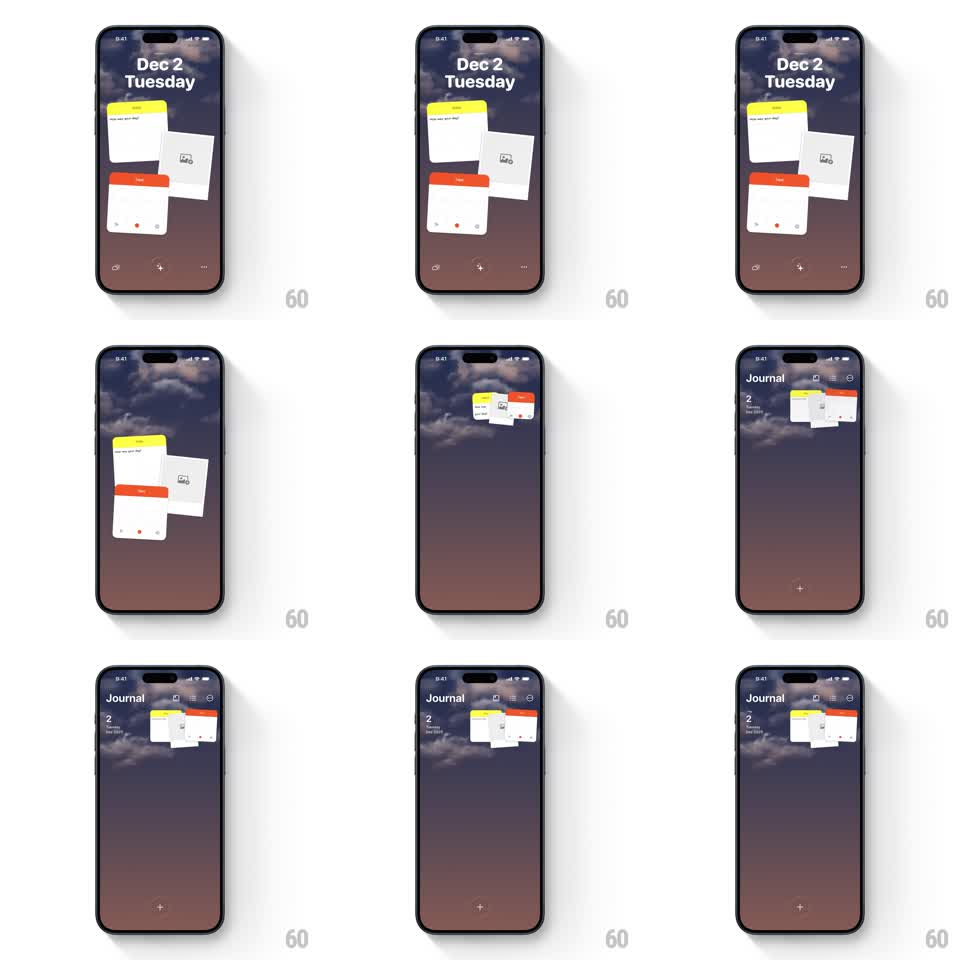

Media
Frame-by-frame

Rebuild this interaction 1:1: Ben Journal's pull-down morph - dragging down on the scattered widget desktop gathers the cards into a compact grouped stack and collapses the big date header into a "Journal" nav row.

Rebuild this interaction 1:1: Ben Journal's pull-down morph - dragging down on the scattered widget desktop gathers the cards into a compact grouped stack and collapses the big date header into a "Journal" nav row. ## Integration Integration: stack-agnostic spec - springs given as stiffness/damping, timed motions as duration + curve; map every value to your framework and animation library of choice. ## Scene Ben Journal home over the dusk sky: a large "Dec 2 / Tuesday" header, three scattered widget cards (yellow note, photo, red tape) in a loose arrangement, and a bottom toolbar (wave, plus, dots). The morphed state: a compact "Journal" nav title with small icons at right, a "2" entry count at left, and the cards gathered into one neat mini-stack in the header row, with a "+" at bottom-center. ## Motion spec Pattern: gesture-driven scatter-to-stack morph on pull-down. - Pull down anywhere: the gesture tracks 1:1 - the big date header shrinks and fades (scale 1 -> 0.7, opacity to 0 by 60% of the drag) while the cards translate from their scattered positions toward the header row, rotating to 0deg and scaling down to mini size (~0.35x) in drag proportion. - Past the 40% threshold the morph completes on release: cards snap into the stacked group with a spring (~350/18, 80ms stagger per card, slight 3deg fan in the stack), the "Journal" nav title and icons fade in (250ms), and the "2" count slides in from the left (200ms). - Release before 40%: everything springs back to the scattered layout (same spring reversed). - Pull up (or tap the stack) reverses the morph: cards spring back out to their exact original scattered positions and tilts (spring ~380/16, staggered 60ms). - The sky background and bottom toolbar stay constant - only the header and cards morph. ## Calibration - The morph is gesture-proportional until the threshold - no time-based auto-run while the finger is down. - Cards keep their content legible during the shrink (no squashing, uniform scale only). ## Reduced motion States crossfade (300ms) without gesture tracking; pull triggers the swap at any distance. ## Don't miss - The scattered positions are deterministic - returning must restore the exact original layout. - The mini-stack fan shows all three card tops - never flatten them into one rectangle.